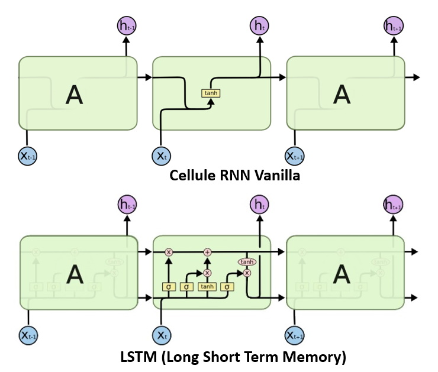
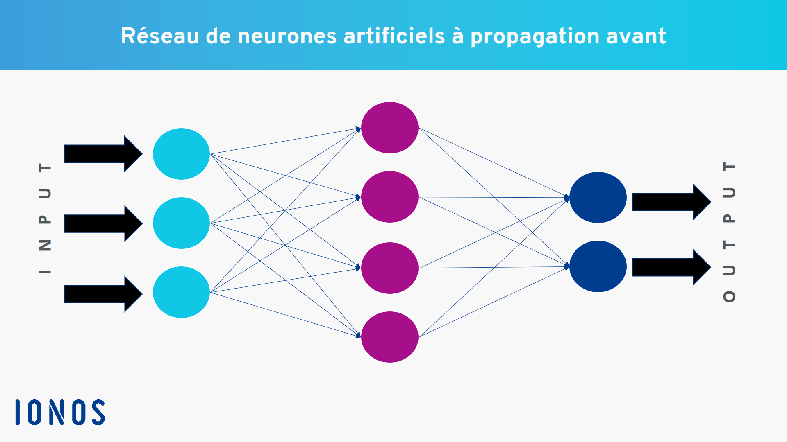

L'impact de l'intelligence Artificielle sur le Marketing Digital
L'intelligence artificielle (IA) a un impact significatif sur le marketing digital et continue de transformer la manière dont les entreprises interagissent avec leurs clients. Voici un video explicative de l'impact de l'IA sur le marketing digital et un lien qui vous dirige vers les meilleurs sites pour creér votre business de Marketing en utilisant l'IA
Voir
Quelques chiffres relatives à l'IA en Marketing
B$
La contribution à l'économie mondiale de l'IA en 2023%
Des cas d'utilsation de l'IA dans le Marketing a un impact positif sur les revenues%
C'est le pourcentage de l'utilisation de l'IA en Marketing à travers des campagnes publicitairesL'IA dans le domaine du Marketing digital
L'Intelligence Artificielle (IA) a un impact considérable sur le marketing digital. Elle permet aux entreprises de mieux comprendre les préférences et les comportements des consommateurs en collectant et en analysant de grandes quantités de données. Cela permet aux spécialistes du marketing de personnaliser les messages de manière plus précise et d'optimiser les campagnes publicitaires pour des résultats plus efficaces. L'IA peut également aider les spécialistes du marketing à automatiser certaines tâches répétitives telles que la création de contenu, l'analyse de données, la gestion des médias sociaux et la planification des campagnes publicitaires. Cela permet aux spécialistes du marketing de se concentrer sur des tâches plus créatives et stratégiques, tout en améliorant l'efficacité et la rentabilité de leurs campagnes.L'IA a un impact significatif dans le domaine du marketing digital en offrant des solutions de plus en plus sophistiquées pour aider les entreprises à mieux comprendre et interagir avec leurs clients. Voici quelques exemples d'impacts de l'IA dans le domaine du marketing digital :
1- Analyse des données : L'IA permet d'analyser de grandes quantités de données en temps réel, ce qui aide les entreprises à mieux comprendre les comportements et les préférences des consommateurs. Les outils d'analyse de l'IA peuvent aider les entreprises à prédire les tendances du marché, à identifier les opportunités de vente croisée et à personnaliser les offres en fonction des préférences individuelles des clients.
2- Chatbots : Les chatbots basés sur l'IA peuvent fournir une assistance clientèle instantanée, 24 heures sur 24 et 7 jours sur 7. Les chatbots peuvent aider les clients à trouver des produits et à résoudre des problèmes rapidement et efficacement, ce qui peut améliorer l'expérience client et augmenter la fidélité à la marque.
3- Publicité ciblée : L'IA peut aider les entreprises à diffuser des publicités ciblées en fonction des données démographiques, des centres d'intérêt et des comportements d'achat des consommateurs. Les publicités ciblées peuvent augmenter les taux de conversion et réduire les coûts publicitaires.
l'évolution de l'impact de l'IA sur le marché mondiale
La figure suivante montre l'évolution du chiffre d'affaire généré par l'intelligence Artificielle depuis 2016 jusqu'a 2025 en fonction de chaque continent.On remarque un taux de croissance très elevé,cela est du au plusieurs raison:
- L'IA contribue à l'évolution de l'efficacité des entreprises
- L'IA contribue à l'évolution la productivité des entreprises
- L'IA aide les entreprises à mieux comprendre les besoins de leurs clients
Les algorithmes de l'IA dans le domaine du marketing digital
Il existe plusieurs algorithmes d'IA qui peuvent être utilisés en marketing digital pour améliorer l'efficacité et l'efficience des campagnes marketing. Voici quelques exemples :
1-Traitement du langage naturel (NLP)
Les algorithmes NLP peuvent analyser et comprendre le langage humain, y compris les publications sur les réseaux sociaux, les avis clients et les interactions avec les chatbots. Le NLP peut être utilisé pour comprendre le sentiment des clients, extraire des informations et automatiser le service client.Voici les étapes typiques du traitement du langage naturel :
- Acquisition de données : Le processus de NLP commence par l'acquisition de données, qui peut être sous forme de texte, de voix ou d'images.
- Prétraitement : Les données brutes sont prétraitées pour éliminer les caractères indésirables tels que les ponctuations, les espaces et les chiffres. Cette étape comprend également la normalisation des mots en les mettant en minuscules, la suppression des mots fréquents qui n'apportent pas de sens (stop words), la lemmatisation pour ramener les mots à leur forme de base (ex : "manger" -> "mange"), et la tokenisation pour séparer le texte en mots.
- Analyse syntaxique : La structure grammaticale de la phrase est analysée pour comprendre les relations entre les mots.
- Analyse sémantique : Cette étape vise à comprendre le sens de la phrase. Elle implique la détection des entités nommées (personnes, lieux, organisations, etc.) et la compréhension des relations entre elles. (positifs, négatifs ou neutres) associés à la phrase.
- Traitement du discours : Cette étape concerne la compréhension du contexte dans lequel la phrase est utilisée. Elle implique la détermination de l'intention de l'utilisateur et la compréhension des nuances de la langue, telles que l'ironie, le sarcasme et le ton.
- Génération de texte : Cette étape consiste à générer une réponse appropriée à la demande de l'utilisateur, en utilisant les connaissances acquises dans les étapes précédentes.
- Évaluation : Cette étape implique la mesure de la qualité de la réponse générée, en utilisant des métriques telles que la précision et le rappel, ainsi que des évaluations humaines pour évaluer la pertinence et la qualité de la réponse.

L'architecture de CNN
L'architecture de CNN
2-La reconnaissance d'images(RNN & CNN)
La reconnaissance d'image: La reconnaissance d'image est un domaine de l'IA qui permet aux machines de comprendre et d'analyser des images. Dans le marketing, les entreprises peuvent utiliser la reconnaissance d'image pour analyser les images de produits et les images partagées sur les réseaux sociaux pour comprendre les tendances et les préférences des clients.
- Convolution: Dans cette étape, le réseau applique un ensemble de filtres convolutifs à l'image d'entrée. Chaque filtre est une petite matrice qui glisse sur l'image d'entrée et effectue une opération de multiplication matricielle pour extraire les caractéristiques de l'image.
- ReLU (Rectified Linear Unit): Après chaque couche de convolution, une fonction d'activation appelée ReLU est appliquée. Cette fonction remplace toutes les valeurs négatives par zéro, ce qui permet d'introduire de la non-linéarité dans le réseau.
- Pooling: Dans cette étape, le réseau réduit la résolution spatiale de l'image en effectuant une opération de sous-échantillonnage. Le pooling peut être effectué de différentes manières, mais l'opération la plus courante est le Max Pooling, qui conserve uniquement la valeur maximale de chaque région de l'image.
- Softmax Layer: Enfin, une fonction softmax est appliquée à la sortie du réseau pour normaliser les scores de classification et produire une distribution de probabilité sur les différentes classes possibles.
L'architecture de l'arbre de décision
L'architecture de réseaux de neurones
3-Apprentissage automatique
L'apprentissage automatique est une branche de l'IA qui permet aux machines d'apprendre à partir de données. Dans le marketing, les entreprises peuvent utiliser l'apprentissage automatique pour analyser des données sur les clients, telles que leurs habitudes d'achat et leurs préférences, afin de mieux comprendre leur comportement et de personnaliser leur stratégie de marketing en conséquence.Il existe de nombreux algorithmes d'apprentissage automatique, chacun avec ses propres forces et faiblesses et adapté à différents types de tâches. Voici quelques exemples d'algorithmes d'apprentissage automatique couramment utilisés :
- Les réseaux de neurones : ce sont des modèles inspirés de la structure du cerveau humain qui peuvent être utilisés pour résoudre des problèmes de classification, de régression, de reconnaissance de motifs, de traitement de langage naturel et d'autres tâches.
- Les arbres de décision : ce sont des algorithmes qui permettent de prendre des décisions en fonction de différents critères. Ils sont souvent utilisés pour la classification et la prédiction.
- Les méthodes de classification : ces algorithmes sont utilisés pour classer des données en différentes catégories ou classes. Les exemples incluent la classification bayésienne, les k-plus proches voisins et les machines à vecteurs de support.
- Les méthodes de régression : ces algorithmes sont utilisés pour prédire une valeur numérique en fonction de variables d'entrée. Les exemples incluent la régression linéaire, la régression logistique et la régression
Quelques tweets sur l'IA en Marketing
Mes dernieres posts sur twitter et Linkdin
Dignissimos asperiores vitae velit veniam totam fuga molestias accusamus alias autem provident. Odit ab aliquam dolor eius.
L'impact de l'ia sur le marketing digital aujourd'hui
Mar. 22th 5Comment l'ia à révolutionné le domaine du marketing digital par plusieurs façons
lire plusActive Campaign
Mar. 22th 4Les meilleurs 19 plateformes du marketing digitale en s'appuyant sur l'ia en 2023
lire plusIA generative et chatgpt 4
Mar. 20th 21reinventer la stratégie du Marketing avec IA génerative et chatgpt 4,Les algorithmes d'IA peuvent également aider à personnaliser le contenu pour les clients en fonction de leurs besoins et de leurs préférences individuelles. Les chatbots basés sur l'IA peuvent répondre aux questions des clients en temps réel, améliorant ainsi l'expérience utilisateur.
lire plus